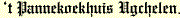
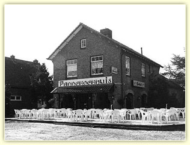
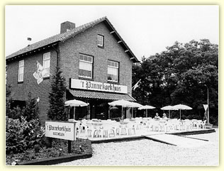

|
De geschiedenis van  gaat terug naar 1970. Na diverse wereldse omzwervingen zijn wij in Nederland terecht gekomen. De familie Oldenburg is een oer-Hollandse familie met een zeer oude bakkerstraditie met specialiteit, het vervaardigen van pannenkoeken. Het recept wat wij gebruiken is dan ook een zeer oud familierecept wat heel erg ver terug in de tijd gaat en wat zorgvuldig van vader op zoon is overgedragen en nog steeds wordt gedaan. Het familierecept is dan ook een familiegeheim waar wij zeer trots op zijn. In 1970 is het eerste pannenkoekhuis van de familie Oldenburg opgestart. In de daaropvolgende jaren zijn er steeds meer Oldenburg-pannenkoekhuizen in Nederland verdeeld over de provincies bijgekomen, inmiddels zijn het er meerdere. |
 |
|
is in 1987 opgestart na een 7 weken durende verbouwing van een voormalige supermarkt die in dit karakteristieke pand gehuisvest was. Het was en is nog steeds een welkome aanvulling aan het pittoreske dorpje Ugchelen wat onder de rook van Apeldoorn ligt.
Het pannenkoekhuis in Ugchelen bestaat dus inmiddels al weer meer dan 31 jaar. Wij zijn zomer en winter geopend en op de maandag zijn wij gesloten (behalve feestdagen). Door de gezellige ligging en het mooie grote terras waarop u in alle rust van een lekkere pannenkoek kunt genieten, 's winters gaat u gewoon lekker bij de openhaard zitten. Voor velen zijn wij het vertrek- of eindpunt van diverse wandel en/of fietsroutes. Parkeren is bij ons totaal geen probleem, doordat wij een eigen grote parkeerplaats hebben. Onze laatste aanwinst is de totaal verbouwde kinderhoek waar de kinderen naar hartelust kunnen spelen, terwijl u als ouder lekker rustig aan tafel zit. |
 |
't Pannekoekhuis Ugchelen - Fam. Oldenburg - Hoenderloseweg 50 - 7339 EJ Ugchelen - Tel.: 055 541 82 11